//i know how to code btw, just jk
electrical & electronic engineering student / ai builder
Things I've built
Mostly with a team, usually against a clock. Point at one to see which parts went into it.
-
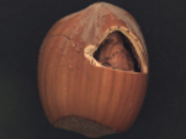
Anomaly Vision
Finding defects in bottles, hazelnuts, metal nuts, transistors and wood with three methods. Top 3 final project.
Imperial College London
-
Scaffld
An agent that teaches a robot a new skill from one sentence, then a small model runs it alone on a laptop.
AgentVerse @UCL, 2026
-
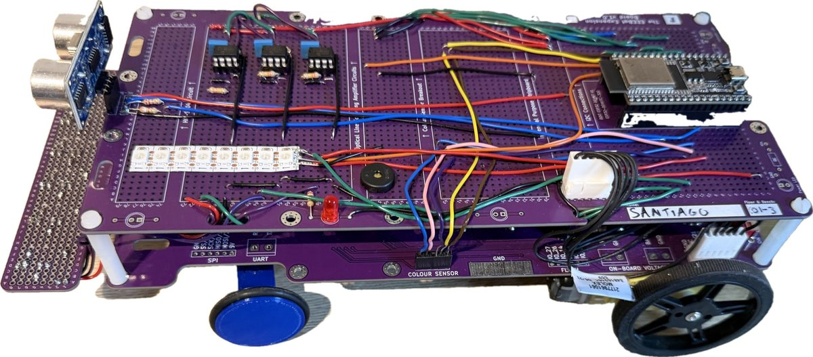
EEEBot
An ESP32 robot built over a whole year, from breadboard to full system: PID line following, a colour sensor and a maze to solve on its own.
University of Nottingham, year one
-
Roadwork AI
Pick a road and it tells you the least disruptive moment to dig it up, with a voice assistant called Aura.
OxHack @Oxford, 2026
-
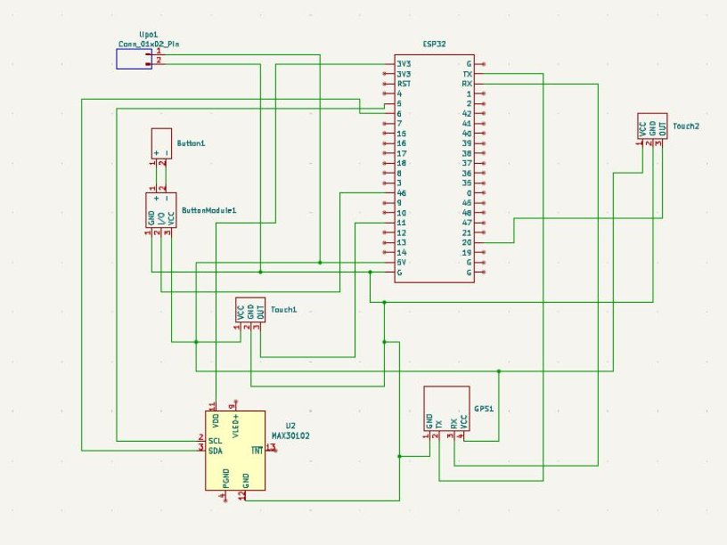
Panic! at the Wrist
A bracelet that notices a driver drifting off and calls for help with a double tap.
StarkHacks @Purdue, 2026
-
Pulse Oximeter
A group design project that measures pulse and blood oxygen. I did the control logic and the display.
University of Nottingham, in progress
Parts bin
What's on my bench. Chips with legs are hardware, the rest is software. Point at a part to see where it ended up.
- ESP32-S3
- STM32
- CPLD
- MAX30102
- TTP223
- NEO-6M GPS
- OLED
- HC-SR04
- TCS3200
- KiCad
- Python
- PyTorch
- PCA
- Argon
- Gemini API
- ElevenLabs
- Snowflake
About
I am an Electrical and Electronic Engineering student (BEng, 2025 to 2028) at the University of Nottingham, the city where I am based.
My work sits where hardware meets machine learning: I design and build the electronics, then write the models that make sense of what they measure. I have done this in university projects, at a summer programme at Imperial College London, and in hackathon teams.
My goal is a master's degree in artificial intelligence.
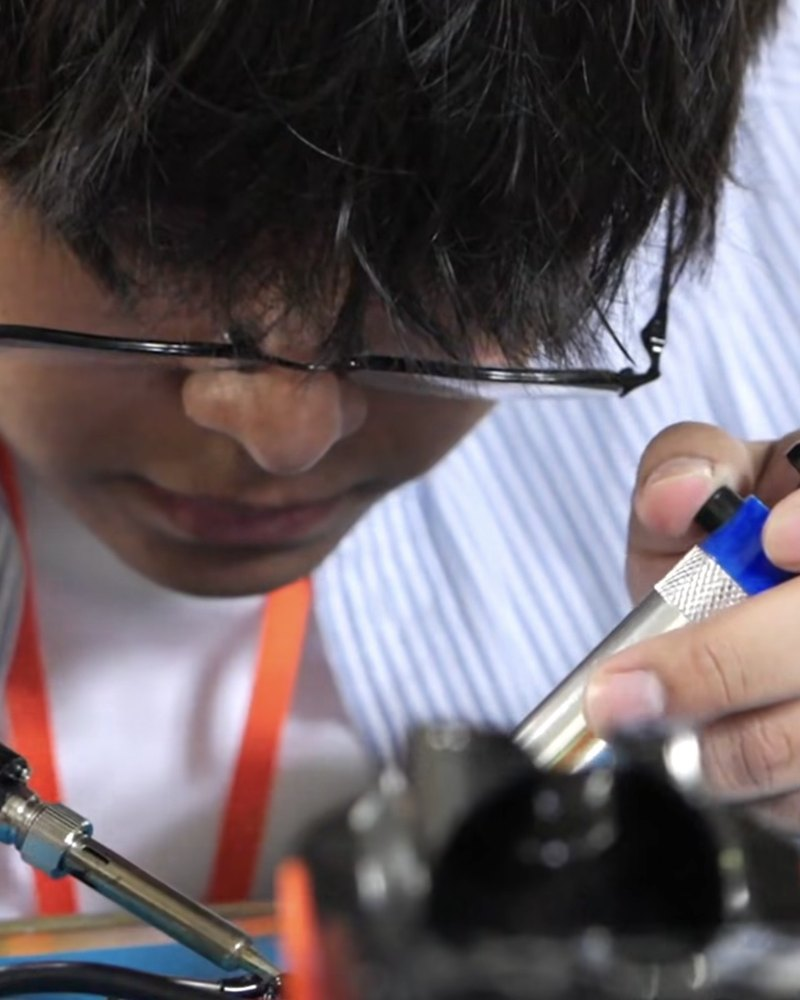
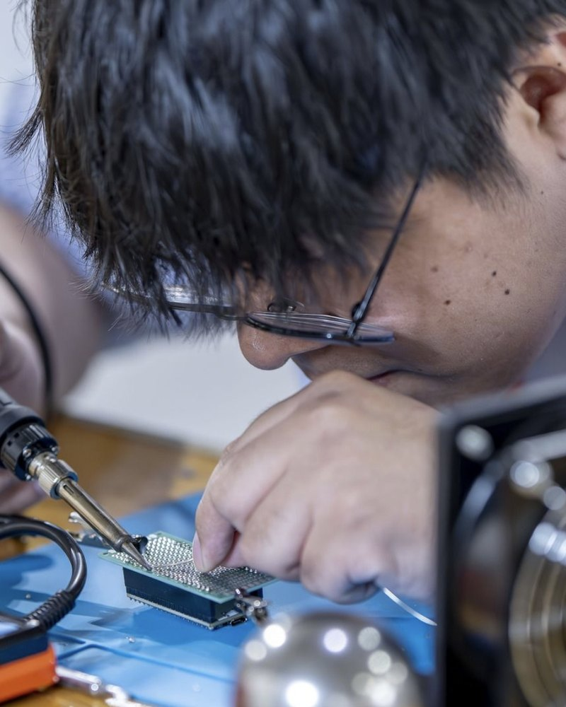
Certificates
Courses and events I've completed. Click one to see the PDF.
The rest of me
Besides being an engineer passionate about AI and machine learning, I'm also a human being!
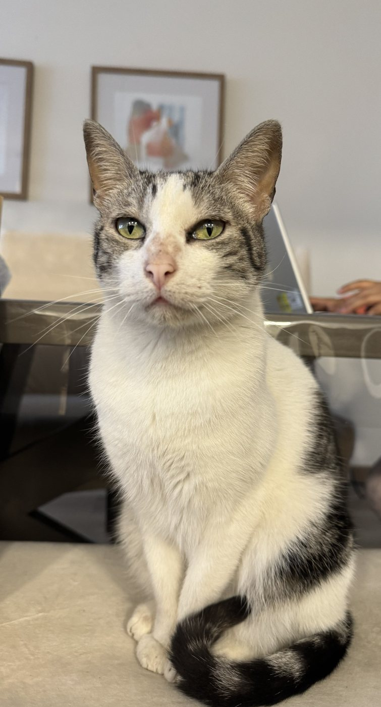
the love of my life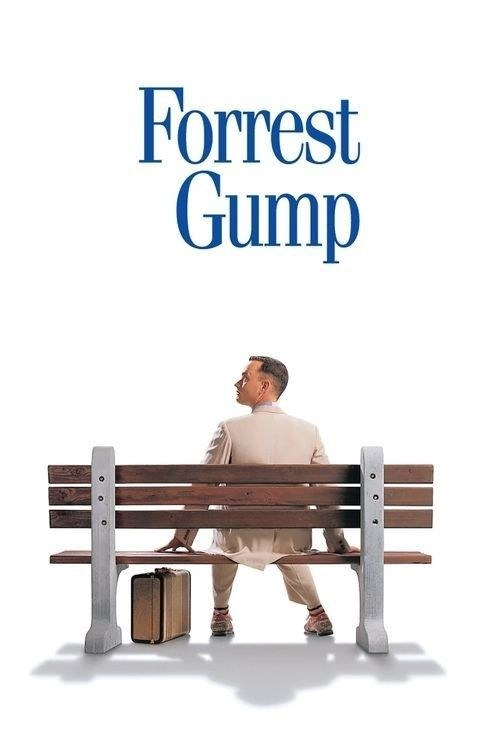
favourite film- LIMBO, keshi
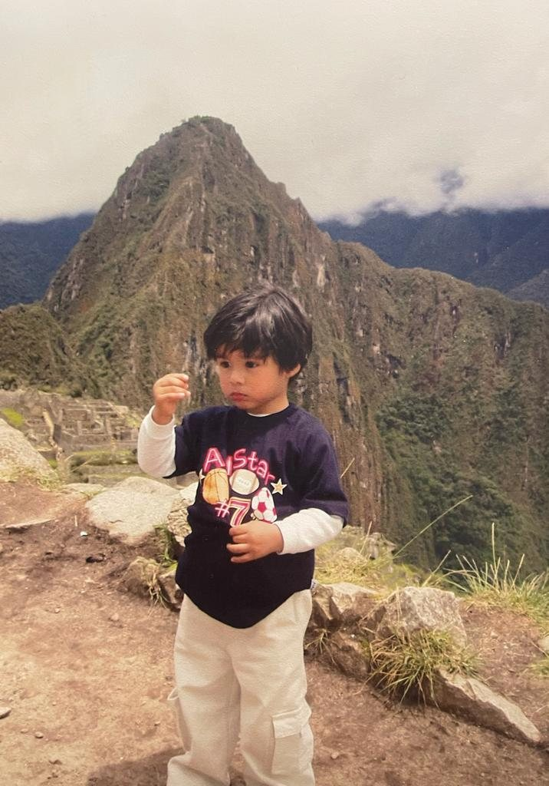
Machu Picchu!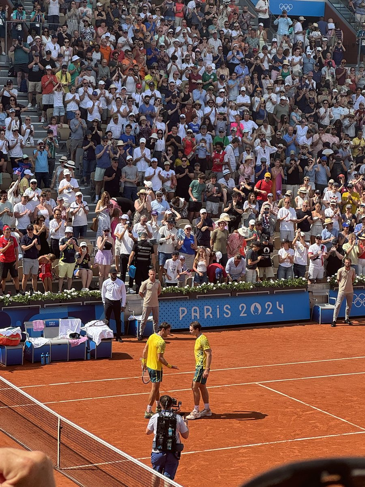
Paris 2024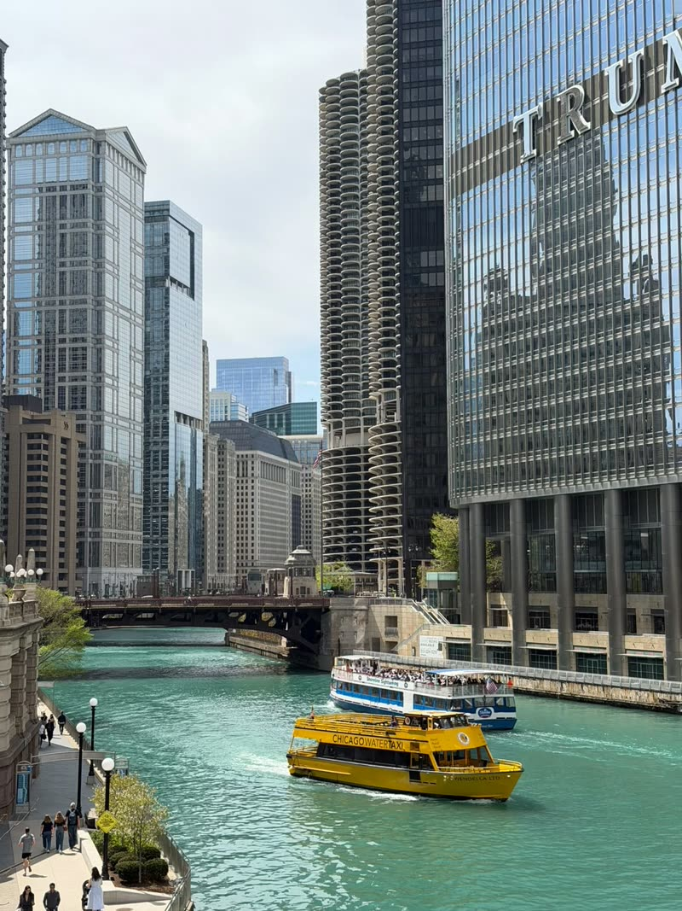
my favourite city!- my goat
- Cómo pasa el tiempo, El Cuarteto de Nos
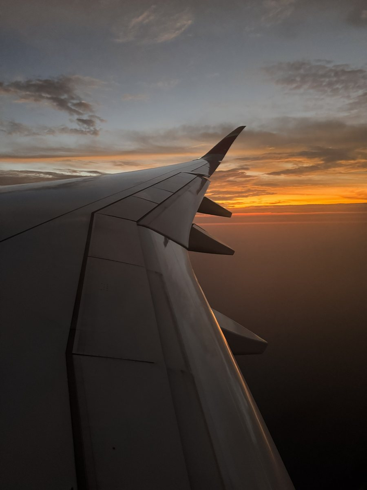
me every time I go back home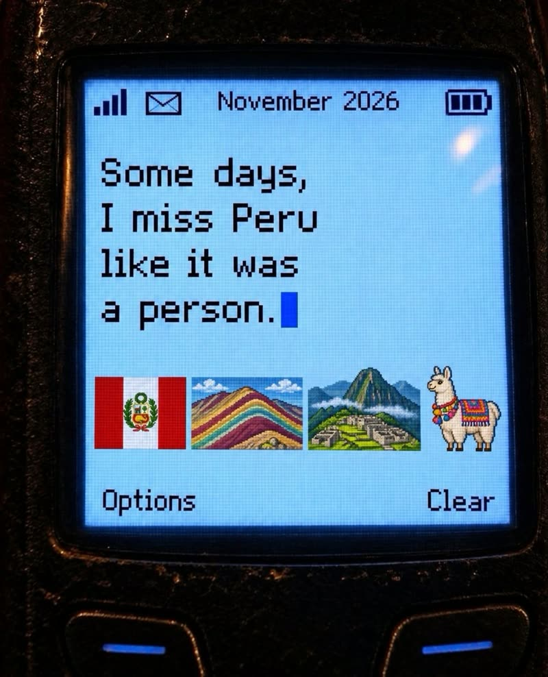
pe causa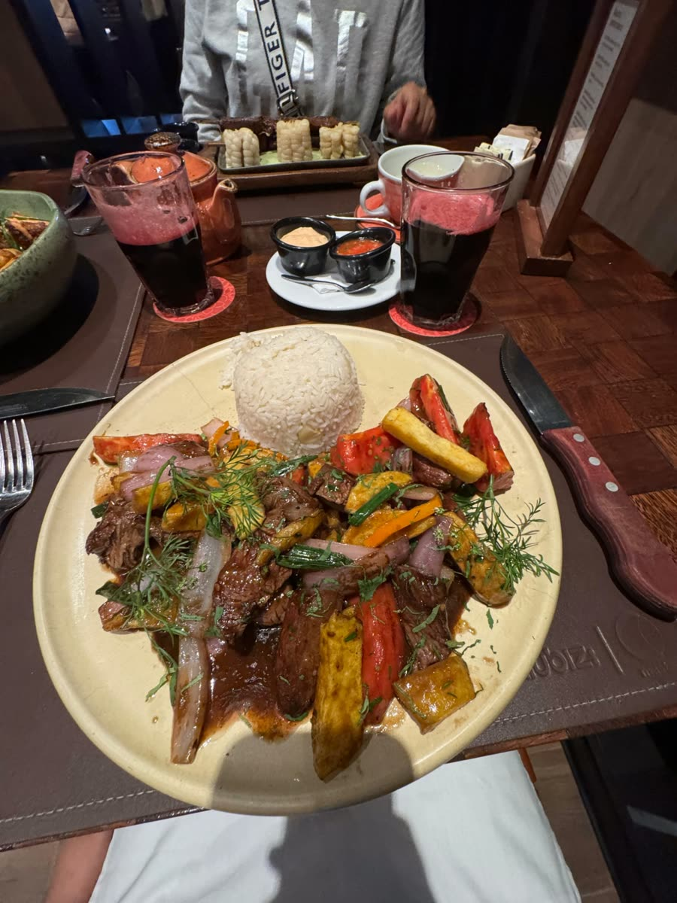
fish and chips? what's that?- Life Is a Highway, Rascal Flatts
- BABY I'M BACK, The Kid LAROI
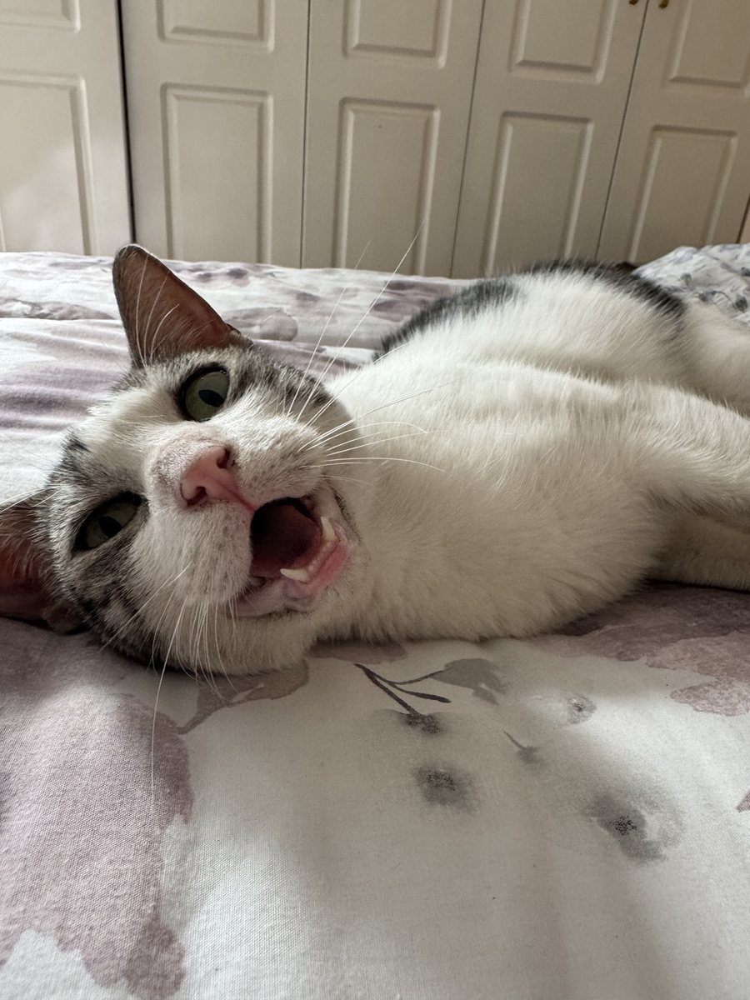
her again- Cuando pienses en volver, Pedro Suárez-Vértiz
// made it all the way down? play a round.